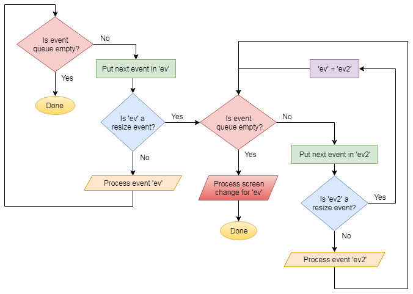

Purple Martians
Technical Code Descriptions
Events
Overview
Processing the event queue
Processing events
Handling multiple resize events
Overview
Allegro 5 is event based. When I converted my game from Allegro 4, I had to do a lot of things differently.
Allegro 5 has an event queue that needs to be processed.
In the examples I've seen, the event queue proccessing is the main control loop of the program, like this:
// example event processing loop
while (1)
{
al_wait_for_event(queue, &event);
if (event.type == ALLEGRO_EVENT_TIMER)
{
handle_game_tick();
need_redraw = true;
}
if (need_draw && al_event_queue_is_empty(queue))
{
render_last_frame();
need_redraw = false;
}
}
This is not how I process the event queue in my game.
I didn't want to make such a huge change to my code, so I came up with an alternative approach.
I have always had a function called 'proc_controllers()' that I call once per frame to handle input.
For Allegro 5, I re-purposed it to also process the event queue, and it seems to work just fine.
I never call al_wait_for_event(). Once every game loop, I process all events in the queue and move on.
When the game is not running and I'm in a menu or the level editor, or whatever, I just call 'proc_controllers()' in whatever loop I'm in.
The speed of the game and menu are controlled by timers.
Processing the event queue
Once every frame I read all the events from the queue and process them.
Most events are passed on to 'proc_events()', except for TIMER and DISPLAY RESIZE which are handled differently.
int proc_controllers()
{
int ret = 0;
int menu_timer_block = 1;
while (menu_timer_block)
{
while (!al_is_event_queue_empty(event_queue))
{
ALLEGRO_EVENT ev;
if (al_get_next_event(event_queue, &ev))
{
if (ev.type == ALLEGRO_EVENT_TIMER) menu_timer_block = 0;
if (ev.type == ALLEGRO_EVENT_DISPLAY_RESIZE)
{
// check to see if we have more resize events piling up
ALLEGRO_EVENT ev2;
while (al_get_next_event(event_queue, &ev2))
{
if (ev2.type == ALLEGRO_EVENT_DISPLAY_RESIZE) ev = ev2;
else ret = proc_events(ev2, ret);
}
proc_screen_change(ev.display.width, ev.display.height, disp_x_curr, disp_y_curr, fullscreen);
}
else ret = proc_events(ev, ret);
}
}
if (game_exit) // if called from menu only do key check for active local player
{
//....
}
else
{
menu_timer_block = 0;
}
}
return ret;
}
Processing events
Here is how most events are processed:
int proc_events(ALLEGRO_EVENT ev, int ret)
{
if (ev.type == ALLEGRO_EVENT_DISPLAY_CLOSE) fast_exit(0);
if (ev.type == ALLEGRO_EVENT_MOUSE_WARPED)
{
mouse_x = ev.mouse.x / display_transform_double;
mouse_y = ev.mouse.y / display_transform_double;
}
if (ev.type == ALLEGRO_EVENT_MOUSE_AXES)
{
mouse_x = ev.mouse.x / display_transform_double;
mouse_y = ev.mouse.y / display_transform_double;
mouse_z = ev.mouse.z / display_transform_double;
mouse_dx = ev.mouse.dx;
mouse_dy = ev.mouse.dy;
mouse_dz = ev.mouse.dz;
}
if (ev.type == ALLEGRO_EVENT_MOUSE_BUTTON_DOWN)
{
if (ev.mouse.button == 1) mouse_b1 = 1;
if (ev.mouse.button == 2) mouse_b2 = 1;
if (ev.mouse.button == 3) mouse_b3 = 1;
if (ev.mouse.button == 4) mouse_b4 = 1;
}
if (ev.type == ALLEGRO_EVENT_MOUSE_BUTTON_UP)
{
if (ev.mouse.button == 1) mouse_b1 = 0;
if (ev.mouse.button == 2) mouse_b2 = 0;
if (ev.mouse.button == 3) mouse_b3 = 0;
if (ev.mouse.button == 4) mouse_b4 = 0;
}
if (ev.type == ALLEGRO_EVENT_KEY_DOWN)
{
int k = ev.keyboard.keycode;
key[k] = true;
ret = k;
}
if (ev.type == ALLEGRO_EVENT_KEY_UP)
{
int k = ev.keyboard.keycode;
key[k] = false;
if (k == ALLEGRO_KEY_PRINTSCREEN) key[k] = true; // special exception to make PRINTSCREEN work
}
if (ev.type == ALLEGRO_EVENT_KEY_CHAR)
{
Key_pressed_ASCII = ev.keyboard.unichar;
serial_key_check(Key_pressed_ASCII);
}
if (ev.type == ALLEGRO_EVENT_JOYSTICK_AXIS)
{
int jy = getJoystickNum(ev.joystick.id);
int jo = 0; // offset
if (jy == 0) jo = 0;
if (jy == 1) jo = 20;
int ax = ev.joystick.axis;
float pos = ev.joystick.pos;
if (ax == 0) // x axis
{
key[130+jo] = false;
key[131+jo] = false;
if (pos > 0) key[131+jo] = true;
if (pos < 0) key[130+jo] = true;
}
if (ax == 1) // y axis
{
key[128+jo] = false;
key[129+jo] = false;
if (pos > 0) key[129+jo] = true;
if (pos < 0) key[128+jo] = true;
}
}
if (ev.type == ALLEGRO_EVENT_JOYSTICK_BUTTON_DOWN)
{
int jy = getJoystickNum(ev.joystick.id);
int sc = get_scan_code_from_joystick(jy, 1, ev.joystick.button);
key[sc] = true;
}
if (ev.type == ALLEGRO_EVENT_JOYSTICK_BUTTON_UP)
{
int jy = getJoystickNum(ev.joystick.id);
int sc = get_scan_code_from_joystick(jy, 1, ev.joystick.button);
key[sc] = false;
}
return ret;
}
Handling multiple resize events
When the display changes, an ALLEGRO_EVENT_DISPLAY_RESIZE event is generated.
This is usually when the window is resized by the user.
It is possible to get a lot of these events as the window is being resized.
Also when the display changes, all video bitmaps are destroyed and must be rebuilt. See: Rebuilding Bitmaps
This takes longer than a normal frame, and may cause delays, especially if I do it for every resize event in a long string of them.
So I implemented an algorithm in the event queue processing code to ignore all resize events except for the last one.
Here is a description of the algorithm:
If I get an ALLEGRO_EVENT_DISPLAY_RESIZE event, the first thing I do is check to see there are more events in the queue.
If there are no more events in the queue, I process the ALLEGRO_EVENT_DISPLAY_RESIZE event.
If there are more events in the queue, then I check to see if they are also ALLEGRO_EVENT_DISPLAY_RESIZE events.
If they are not ALLEGRO_EVENT_DISPLAY_RESIZE events, I process them right away.
If they are ALLEGRO_EVENT_DISPLAY_RESIZE events, I set the first event (ev) to the second one (ev2), overwriting and losing the first one.
When I no longer have any events in the queue, then I process the resize event in ev.
This method allows me to ignore all but the last ALLEGRO_EVENT_DISPLAY_RESIZE event, while still processing all other events.

while (!al_is_event_queue_empty(event_queue))
{
ALLEGRO_EVENT ev;
if (al_get_next_event(event_queue, &ev))
{
if (ev.type == ALLEGRO_EVENT_DISPLAY_RESIZE)
{
// check to see if we have more resize events piling up
ALLEGRO_EVENT ev2;
while (al_get_next_event(event_queue, &ev2))
{
if (ev2.type == ALLEGRO_EVENT_DISPLAY_RESIZE) ev = ev2;
else ret = proc_events(ev2, ret);
}
proc_screen_change(ev.display.width, ev.display.height, disp_x_curr, disp_y_curr, fullscreen);
}
else ret = proc_events(ev, ret);
}
}
See also: proc_screen_change() proc_events()